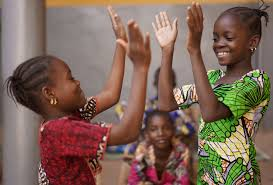

Quienes somos

Cuando hablamos de "quiénes somos" en el contexto de la violencia escolar, nos referimos a todos los actores que forman parte de la comunidad educativa y que, de alguna manera, pueden verse involucrados en este problema. Esto incluye:
Estudiantes:
Pueden ser tanto víctimas como agresores. También pueden ser testigos de situaciones de violencia.
Docentes y personal escolar:
Tienen un papel fundamental en la prevención y detección de la violencia. Deben estar preparados para intervenir y brindar apoyo a las víctimas.
Padres y familias:
Son responsables de educar a sus hijos en valores como el respeto y la tolerancia. Deben estar atentos a las señales de alerta y colaborar con la escuela.